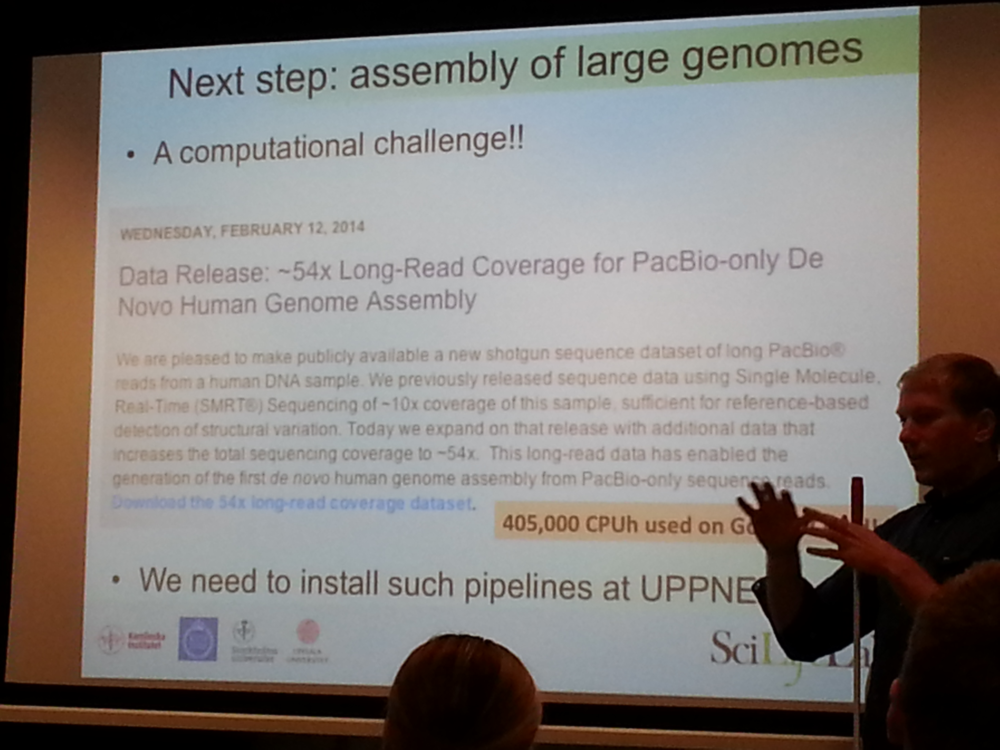

NGS Bioinformatics Intro Course Day 2
Today was the second day of the introductory course in NGS bioinformatics that I'm taking as part of my PhD studies.

For me it started with a substantial oversleep, probably due to a combination of an annoying cold and the ~2 hour commute from south Stockholm to Uppsala and BMC. Thus I missed some really interesting material (and tutorial) on file types in NGS analysis, but will make sure to go through that in my free time during the week.
I came to the lecture quite fittingly, exactly when Olga Vinnere-Petterson were going from the "older" NGS techniques that I already know fairly well (454, etc), and into the newer ones, such as PacBio and IonTorrent.
In the afternoon, Adam Ameur covered some examples of typical analysis workflows for NGS data, taken from their real-world projects. This was super-interesting, and really gave a glimpse into what NGS analysis often looks like in practice.
A common theme for the day was constrasting of different types of Next-gen sequencing machines, their specific quality characteristics, and the subsequent impact on the analytics of its data.
In some of the final slides, we had this kind of "overview" of the main three technologies today:
- Use illumina when you need a really large amount data (reads), for the buck.
- IonTorrent can be nice for certain applications (forgot exactly what! =P ), at a reasonable cost.
- Use PacBio when you want great quality: The single-molecule very long-reads sequencing, can resolve all kinds of problems with the other methods, making de novo assembly and various correction and validation easier.
- A more comprehensive summary was also prestented:
Then there is also some upcoming really interesting technologies, some of which is already available at SciLifeLab:
- The Illumina HiSeq X Ten machines, which can sequence 320 human
whole genome sequences per week!
- (Hint: This will put an enormous pressure on the downstream analysis pipeline and infrastructure! ... something that goes well in hand with our research in Ola Spjuth's group at Dept. for Pharm. Biosciences, on how to automate handling of really large datasets, using workflow tools and big data technologies etc.)
- The MinION "sequencer on an USB
stick"
by Oxford Nanopore tech , that has
a suggested pricetag around $50 USD! (wow!):
- Another nice picture of the MinION, that shows just how handy it
is - just plug it to your laptop, and pipette your sample onto it!
Some other random learnings from today was:
- Most if not all of the sequencing machines provide raw data (reads) in FastQ format, that contains the sequences of the reads (short fragments of DNA ... the Next Gen sequencing methods build upon the technique of ripping DNA into small fragments, and sequencing them in parallel, to gain performance)
- SciLifeLab here in Sweden happens to be the 3rd best equipped sequencing center in Europe, after Sanger in the UK, and deCode on Island.
- Adam Ameur noted that Bacterial genome sequencing is "pretty much solved" (in that one can easily assemble the genomes in a high quality enough to not have that many ambiguities left), using the longer reads of the PacBio sequencer, possibly corrected with shorter (but higher number of) reads from e.g. an illumina machine.
- Adam also mentioned a really interesting data released by
PacBio
where they sequenced and assembled de novo, the human genome to
54X coverage depth:

Finally the course participants had the chance to shortly present their own on-going projects and to discuss any questions they might have related to that. We had quite some discussion on the suitable number of samples, and it was concluded that 3 well functioning samples is the absolute minimum (of course), but that one should always strive to have a bit more, as a margin, since otherwise if one of them is dropped for any reason (low quality or other problems), you're smoked. Also it was noted that just "technical samples" (taking multiple times from the same material) is not as interesting as "biological samples" (multiple cells / tissue samples, but optimally even multiple donors).
All in all, it was a highly interesting day, with a lot of discussion of the intricacies of data analysis in the face of messy data, which has to involve various quality control measures, and ways to handle that, etc.
Now looking forward to tomorrow (or today, as I write this blog post one day late, on the train to the course), wednesday, when we will dive into the core of the course, with "Alignment with BWA; Samtools; Data Processing with Picard; Variant Calling with GATK; SAM/BAM and VCF Formats".